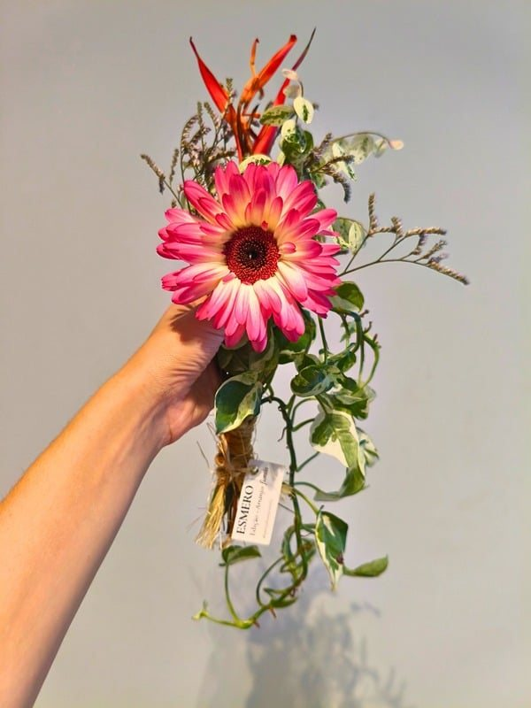
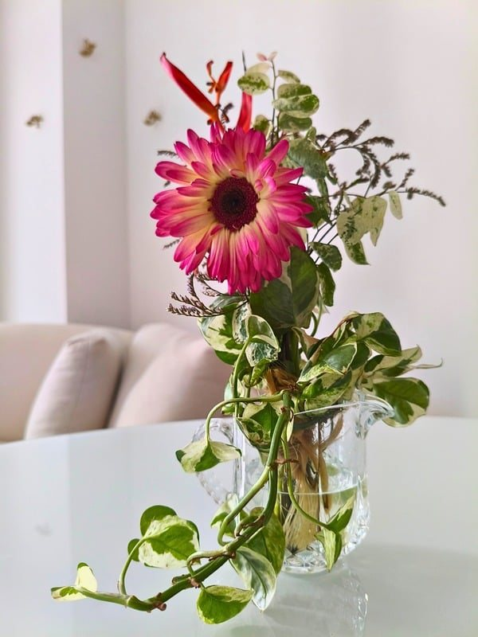
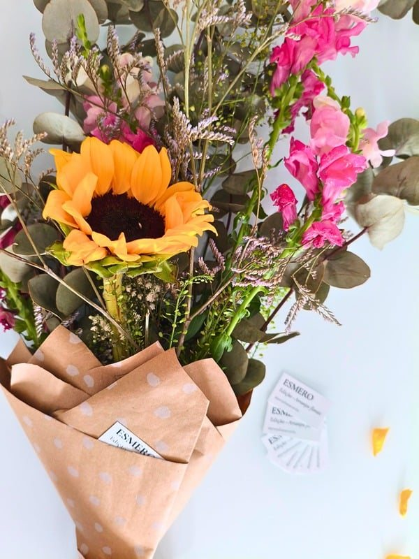
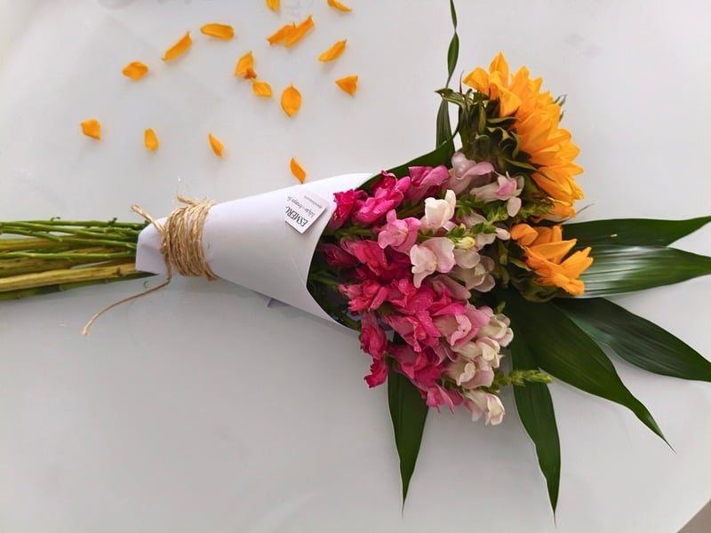
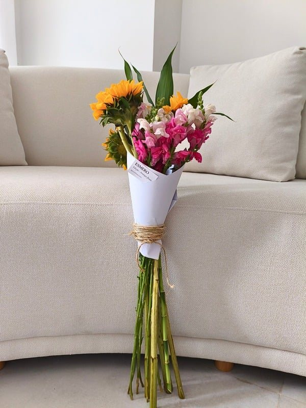
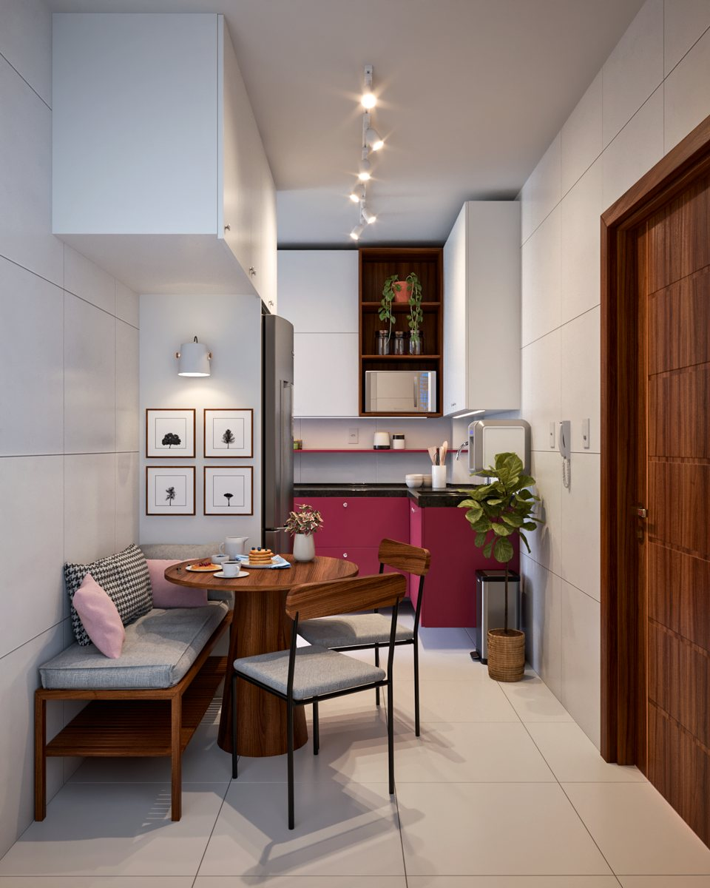
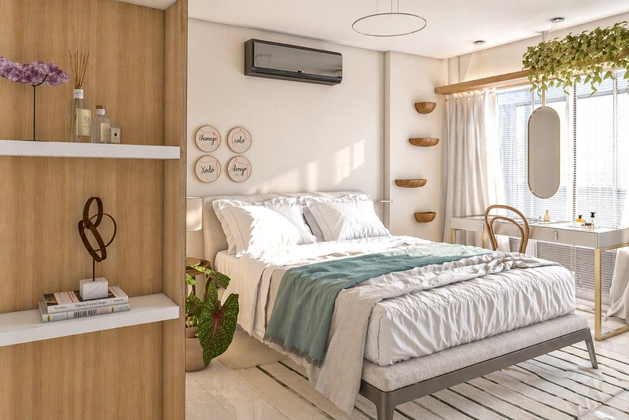
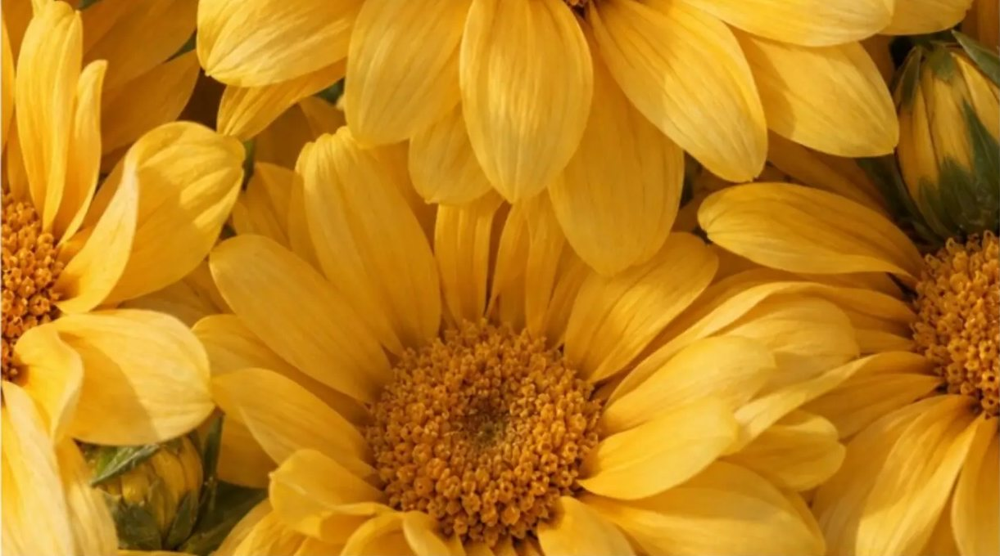
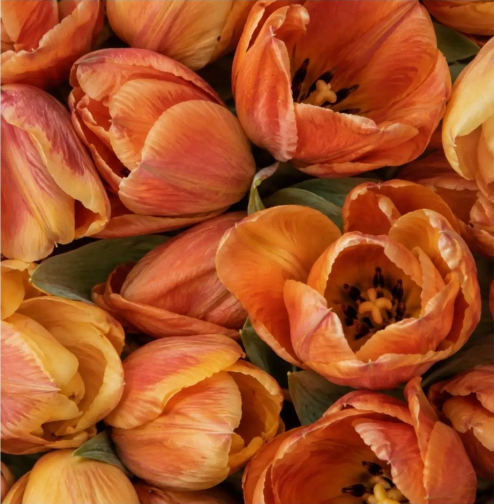
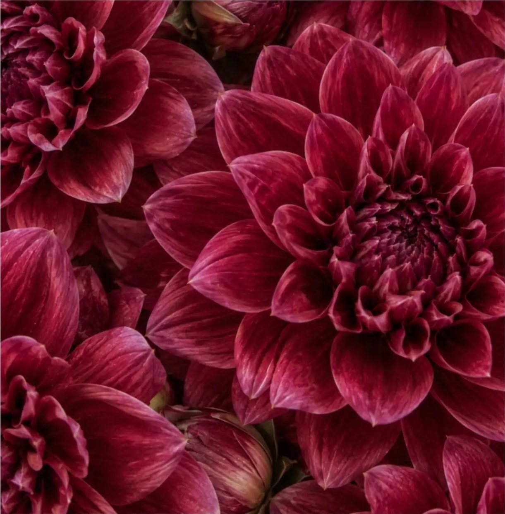

Por Juliana CorrêaBelém do Pará
A primeira coleção de arranjos
A primeira coleção de arranjos florais da ESMERO chegou em 22 de setembro de 2026.
Quero meu arranjo da semanaUm projeto experimental em construção (…)
Uma coleção semanal de arranjos florais autorais. Um exercício de curadoria, criatividade e sensibilidade para o nosso bem-viver.
A cada semana, ao menos três composições são divulgadas em nossas redes para você escolher seu exemplar preferido.
Disponíveis sob demanda, enquanto durar a edição. Exclusivo em Belém do Pará.




Onde beleza, composição e naturalidade se encontram. A expressão da nossa assinatura.
Quero um Essencial

A criação singular. Livre para ser elegante, exuberante, minimalista ou inesperada, conforme a coleção.
Quero um UniqueA cada semana, ao menos três composições são divulgadas em nossas redes.
Para você escolher seu exemplar preferido.
Disponíveis sob demanda, enquanto durar a edição. Exclusivo em Belém do Pará.
ESMERO por Juliana Corrêa
ESMERO parte dessa pergunta simples, e inesgotável:
O que cabe no nosso bem-viver?
A gente passa boa parte da vida aprendendo o que ter, o que fazer, como viver; o que é bonito, adequado, desejável, bem-visto.
Aprende a reproduzir o que já está dado.
Mas, talvez, haja uma pergunta anterior:
Que vida queremos tornar possível?
O que nos faz bem?
O que é essencial?
Começamos por dentro: observando, percebendo e filtrando o que queremos cultivar, até darmos forma ao que importa, faz sentido e faz bem.
Assim escrevemos, imaginamos e criamos:
maneiras mais belas de estar aqui.



Para quando a casa, o escritório ou a sala de atendimento já não acompanha tão bem a vida que você leva.
Uma leitura cuidadosa do seu espaço e momento de vida para perceber, no que já existe, novas possibilidades de acolher sua rotina e aquilo que importa para você.
Construímos diretrizes para mudanças singelas de composição, organização e atmosfera: sem obras, pensadas com esmero e dentro da sua realidade.
Atendimento 100% online.
ESMERO por Juliana Corrêa
Se pudéssemos ouvi-las, o que elas teriam a nos dizer?
As flores sempre despertaram algo em nós.
Mas o que exatamente acontece quando ficamos diante delas?
Talvez a resposta passe pelos sentidos, pelas emoções, pela memória, pela atenção, pelo cuidado e também pela nossa capacidade de encontrar significado e encantamento nas coisas simples.
Em outras palavras: o que uma flor pode revelar sobre a nossa própria interioridade?
Talvez refletir sobre essa pergunta seja também uma forma de nos aproximarmos de um viver com mais Esmero.

Talvez as flores nos lembrem de algo simples: o corpo percebe antes mesmo de encontrarmos palavras para o que sentimos. Cores, formas e fragrâncias estimulam nossos sentidos, e o contato com as flores pode favorecer estados de relaxamento, apoiar a recuperação da atenção e contribuir para a regulação e redução do estresse.

Talvez então nos dissessem: “preste atenção”. Porque uma flor pode interromper, ainda que por um instante, o fluxo automático do cotidiano. Ao nos demorarmos diante delas, abrimos espaço para a contemplação e a apreciação. E aquilo que recebe nossa atenção passa a ocupar outro lugar em nossa experiência.
Talvez nos lembrem também que não sentimos as coisas do mesmo jeito. Uma flor pode provocar diferentes respostas emocionais e afetivas: despertar alegria em alguém, nostalgia, tranquilidade ou estranhamento em outro. Porque aquilo que encontramos fora também encontra algo que existe apenas dentro da gente.

E talvez perguntassem: “O que você associa a mim?” Uma espécie. Uma cor. Um perfume. Podem se tornar pistas para a memória, trazendo à tona pessoas, lugares e momentos já vividos. Às vezes, basta um simples aroma para nos transportar de volta a outro tempo.

Flores atravessam culturas e épocas como símbolos de amor, celebração, boa sorte, renovação. Nós damos sentidos ao mundo e esses sentidos também participam da maneira como nos relacionamos com esse mundo.

Talvez dissessem: “Olhe para o que me faz florescer.” Luz. Água. Espaço. Tempo. Cuidado. E então a pergunta poderia voltar para nós: de que condições precisamos para viver bem?

Mas uma flor também poderia nos dizer: “Eu não vou permanecer assim para sempre.” Ela muda. Abre-se, transforma-se, murcha. E talvez nos ensine que a beleza de alguma coisa não depende de sua permanência.

E há ainda aquilo que talvez seja mais difícil de explicar: o encantamento. Por que uma flor pode nos maravilhar? Por que paramos para olhar algo que não precisa fazer nada por nós? Será porque ainda exista em nós uma capacidade preciosa de nos deixar tocar pela beleza que nos cerca?

E então talvez a pergunta inicial volte: o que as flores têm a ver com a nossa própria interioridade? Talvez tudo aquilo que sentimos diante delas, diga um pouco sobre quem somos. Sobre o que nos toca. Sobre onde está nossa atenção. Sobre o que lembramos. Sobre o que valorizamos. Sobre o que escolhemos cuidar.

Talvez as flores nos recordem, sobretudo, que não precisamos escolher entre compreender e sentir. Acolher todas as nossas partes e permitir que o mundo nos veja por inteiro também faz parte das lições de uma flor. Talvez seja por isso que valha tanto a pena parar para ouvi-las de vez em quando.
Por Juliana Corrêa
Quem está por trás:
Advogada e designer de interiores, Juliana encontrou na criação um fazer mais sensível e coerente com o que há tempos pedia voz e espaço dentro dela mesma. Foi assim, olhando pra dentro, que idealizou a ESMERO: um espaço de expressão, experimentação e cultivo, onde criatividade e esmero se colocam a favor do nosso próprio florescer.
ABD 39-093
Quando o interior faz sentido, o bem viver ganha espaço para florescer.